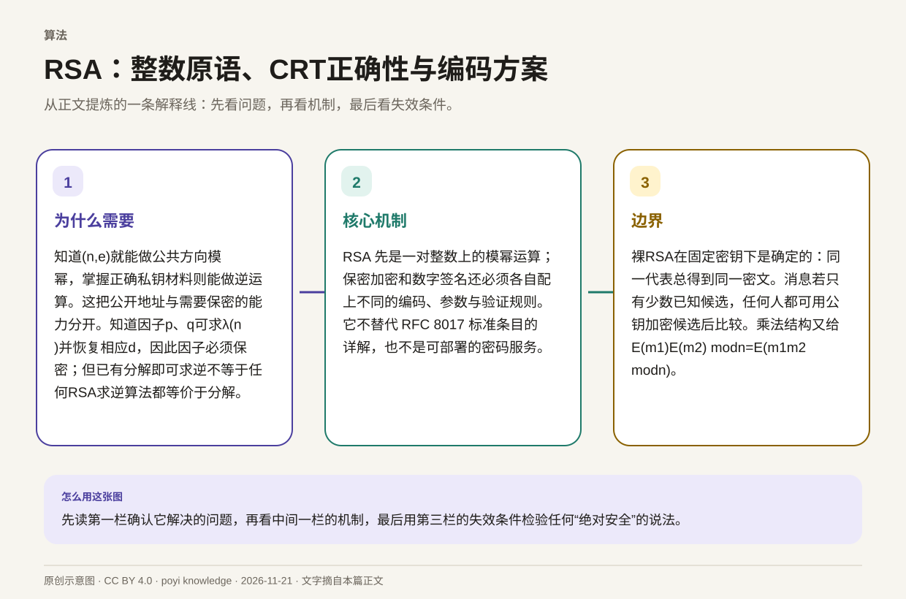
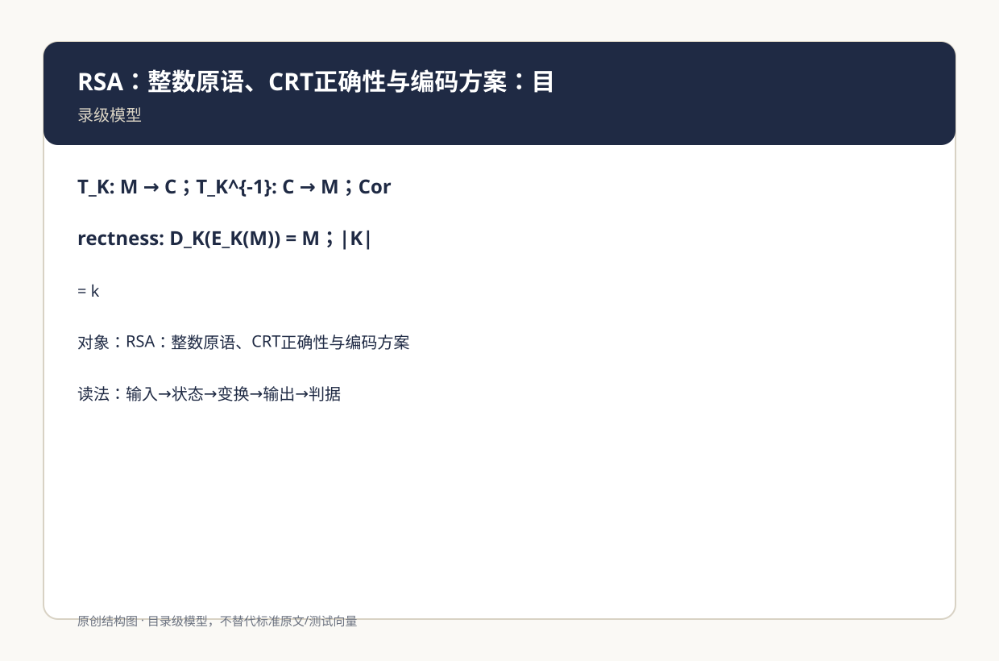

原理与机制
算法：RSA 公钥密码（RSA）。RSA 先是一对整数上的模幂运算；保密加密和数字签名还必须各自配上不同的编码、参数与验证规则。该条目解释目录实体 algorithm--rsa，限定为两素数 RSA，再说明 OAEP/PSS 怎样使用这些原语。它不替代 RFC 8017 标准条目的详解，也不是可部署的密码服务。### 消息字节与整数代表
设 n 的位数为 modBits，k=ceil(modBits/8) 是模数字节长度。RSAEP 的输入 m、输出 c 都属于 0…n−1；RSADP 对同样范围的密文代表求逆。0 和与 n 不互素的代表没有被排除。超出范围应报错，不能擅自先取模，让不同输入悄悄变成同一个代表。用户消息 M 则是字节串。OS2IP 按大端把字节串解释成非负整数；I2OSP(x,len) 输出指定长度的大端字节串，不够时补前导零，x≥256^len 时失败。它们只负责表示转换，不负责保密、填充或认证。00 41 与 41 都表示整数 65，因此长度还须由上层约定。RSAES 密文和 RSASSA 签名使用固定 k 字节，内部编码长度另按具体方案计算。### 两素数密钥条件
取互不相同的奇素数 p、q，令 n=pq，φ(n)=(p−1)(q−1)，λ(n)=lcm(p−1,q−1)。RFC 8017 规定的公钥指数条件是 3≤e<n 且 gcd(e,λ(n))=1；原文写法是 integer between 3 and n - 1 satisfying GCD(e,\lambda(n)) = 1（留存件 rfc8017.txt:457-458）；私钥指数满足 0<d<n 和 ed≡1 modλ(n)。d 是 e 关于 λ(n) 的逆元，不是普通分数 1/e。用 φ(n) 求逆也可得到正确指数，因为 λ(n) 整除 φ(n)，但两个模数不能混写。这些是数学及表示层条件，不是完整的安全密钥生成流程。互异、奇素数、指数互素等条件要验证；现实还涉及随机源、素性验证、参数约束及密钥生命周期。这里不从旧论文或教学数字推导当前部署应选的位数，也不把能往返当作安全密钥证明。### 正确性为什么覆盖非互素代表
写 ed=1+tλ(n)。对 r=p 或 q 分情况：若 r 整除 m，则 m^ed 与 m 都模 r 为0；否则费马小定理给 m^(r−1)≡1，而 r−1 整除 λ(n)，所以 m^ed≡m modr。两种情况都成立。因为 p、q 互素，CRT 保证两者在 0…n−1 中对应唯一整数，因此 (m^e)^d modn=m。这个证明没有把 m 当成必然可逆元；直接在所有 m 上套欧拉定理会漏掉素因子整除 m 的情形。附带穷举检查全部3233个代表，其中113个与n不互素（包括0）。有限穷举只复核本例，不替代一般证明。### 直接计算与 CRT
模幂可用重复平方、按指数位选择相乘，并持续模 n 化简，不必先构造巨大的 m^e。私钥也可保存 dP=d mod(p−1)、dQ=d mod(q−1)、qInv=q^(−1) modp。给定 c，计算 m1=c^dP modp、m2=c^dQ modq，h=((m1−m2)qInv) modp，最后 m=m2+qh。h 取 0…p−1，故 m 落在0…pq−1；它模p等于m1、模q等于m2。qInv 的方向是 q 对 p 的逆，不能把相反的 CRT 约定直接代入。CRT 减小运算模数，确切速度取决于实现，不无条件承诺 固定快四倍 这一说法。

为什么重要
知道(n,e)就能做公共方向模幂，掌握正确私钥材料则能做逆运算。这把公开地址与需要保密的能力分开。知道因子p、q可求λ(n)并恢复相应d，因此因子必须保密；但已有分解即可求逆不等于任何RSA求逆算法都等价于分解。后一个等价关系不能当作已证明的普遍定理。### 一条清楚的工程分界
整数置换、加密方案、签名方案、证书和协议解决不同问题。OAEP把消息编码后送入加密原语；PSS为签名构造可检查的代表。身份归属还要靠密钥认证与协议上下文。把层次分清，才能解释为何裸RSA的正确性不产生现代保密性，也不自动产生不可伪造的签名结论。
应用与实例
按RFC8017字节约定，给定哈希Hash（输出hLen字节）、MGF及标签L，消息须满足mLen≤k−2hLen−2。先算lHash=Hash(L)，形成DB=lHash || PS || 01 || M，PS为使长度吻合的零字节。生成hLen字节随机seed；用MGF(seed,k−hLen−1)掩码DB，再用MGF(maskedDB,hLen)掩码seed。最终EM=00 || maskedSeed || maskedDB，转成整数后计算c=m^e modn，输出C=I2OSP(c,k)。MGF1把四字节大端计数器0、1、…附在输入后散列，连接输出并截取所需长度；它是确定的，不是随机数发生器。OAEP随机性来自seed。标签是双方另行约定且须检查哈希的参数，不是额外消息正文。密文仍为k字节，消息容量却扣掉编码开销，不能把任意长文件直接当一段RSA消息。### RSASSA-PSS：编码可验证的签名代表
PSS不是把OAEP或明文拿来私钥加密。令emBits=modBits−1、emLen=ceil(emBits/8)。计算mHash=Hash(M)，选择配置长度sLen的salt，H=Hash(8个零字节 || mHash || salt)。构造DB=PS || 01 || salt，用MGF(H,emLen−hLen−1)掩码，按emBits清除最左多余位，最后EM=maskedDB || H || bc。需有emLen≥hLen+sLen+2。签名原语把OS2IP(EM)变为s，输出k字节S。验签者同时需要M和S；公共模幂恢复的是编码代表，不是从签名中取回原始消息。它检查签名长度与范围、尾字节、最左限制位、PS与分隔符、salt长度，并重新计算H。只比较末尾哈希或忽略参数不是完整PSS验签。PSS原论文的安全证明有RSA求逆困难性与理想化哈希等前提；标准编码与原论文版本也有差别，不能把证明名称当作任意实现的无条件保证。### 协议决定具体角色
按2026-10-24核对的TLS1.3规范RFC9846，TLS1.3不使用静态RSA密钥传输，但保留RSA-PSS认证签名。对应PSS方案约束摘要、MGF1摘要和salt长度。所以 不用 RSA 密钥交换 不能改写成 不使用 RSA。证书链、主机身份、协商参数和握手上下文另需按协议验证；单次RSA验签成功不自动证明某个名字属于某把钥匙。

边界与攻击面
裸RSA在固定密钥下是确定的：同一代表总得到同一密文。消息若只有少数已知候选，任何人都可用公钥加密候选后比较。乘法结构又给E(m1)E(m2) modn=E(m1m2 modn)。例子中不知私钥也可把65的密文变成130的密文。这说明可篡改性，不是普遍的免费解密算法；经过OAEP后，不能把等式直接解释成用户消息也这样相乘。### 不能把全部风险归结为分解n
重复或不合条件的素因子、错误指数条件、私钥泄漏、弱随机源、错误编码检查都可能破坏系统。小指数若直接作用于未预处理的小消息，还可能在未模回绕时暴露普通整数幂。某个e的名字不是单独安全开关，分解困难也不能修复这些方案和实现错误。### 错误反馈可能变成信息
OAEP解码须检查长度、范围、前导字节、标签哈希及DB结构。不同失败原因若经响应或时间被区分，就可能给选择密文攻击提供信息。PKCS #1 v1.5加密与PSS签名不是同一方案，不能因为共享PKCS#1名称就共用解析规则。Shoup的研究区分一般陷门置换的OAEP与具有特殊代数结构的RSA-OAEP；早期一般证明的缺口不是已证明RSA-OAEP不安全。### 数学之外：侧信道与故障
Kocher的计时研究表明，某些实现的私钥运算时间会泄漏秘密相关信息。私钥运算不能直接照搬教学用变时BigInt循环；加盲、与秘密无关的执行路径等防护需要专门设计，也不意味着所有物理泄漏自动消失。CRT还有故障边界：若输出在一个素数分支正确、另一个分支出错，错误结果可与公开关系一起暴露因子。Boneh、DeMillo、Lipton研究了某些CRT-RSA实现的这种故障攻击。错误输出检查与故障防护是实现责任；正常正确性证明不保证错误计算也安全。本文程序只处理公开玩具数和公开向量，不承担密钥保管、恒时或故障安全服务。
历史与背景
Rivest、Shamir、Adleman的原始论文《A Method for Obtaining Digital Signatures and Public-Key Cryptosystems》发表于1978年的Communications of the ACM。它展示模幂方法、公私钥关系与签名设想。原文关于难以伪造、参数或计算能力的安全口吻属于当时语境，不能直接当作今天的保证；OAEP、PSS及后来协议的编码要求须分别阅读规范。Bellare与Rogaway的1996年PSS论文研究精确签名安全性。Shoup的2001年修订研究提醒我们，证明依赖具体假设与构造。RFC8017在2016年重新发布PKCS#1v2.2并取代RFC3447，类别是Informational，不能把RFC三个字自动当作Internet Standard。本轮重新核对TLS文档状态：RFC9846于2026年7月发布并明确取代RFC8446。本稿用它说明RSA在TLS1.3里的角色，同时保留核查日期。协议文档状态、算法有效条件和具体产品可用性是不同问题。
逐步示例与核验
复算示例
取标准或公开测试向量中的一组参数，按“输入—执行—输出”记录：先写出该条目的形式式 (C\equiv M^e\pmod N,\qquad M\equiv C^d\pmod N)；再按规范顺序执行每一步，最后把输出与独立实现或标准向量逐字节对照。若没有可引用的数值向量，就只记录结构步骤，不伪造输出。
参考出处
- Wikipedia search entry for RSA 公钥密码. https://zh.wikipedia.org/w/index.php?search=RSA%20%E5%85%AC%E9%92%A5%E5%AF%86%E7%A0%81
- Handbook of Applied Cryptography (Menezes, van Oorschot, Vanstone). https://www.cacr.math.uwaterloo.ca/hac/